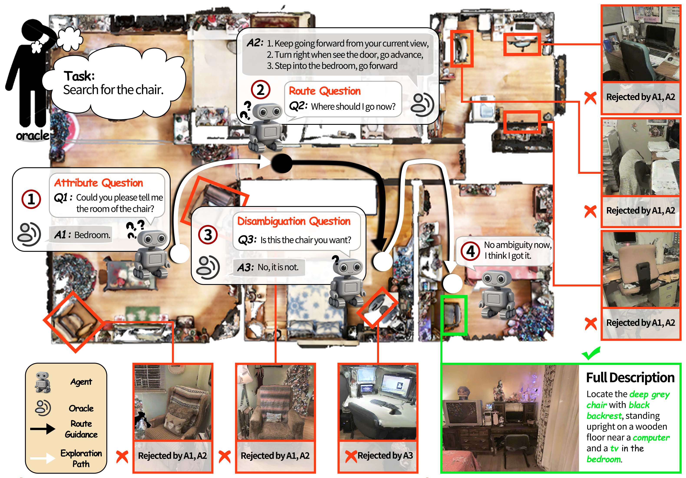
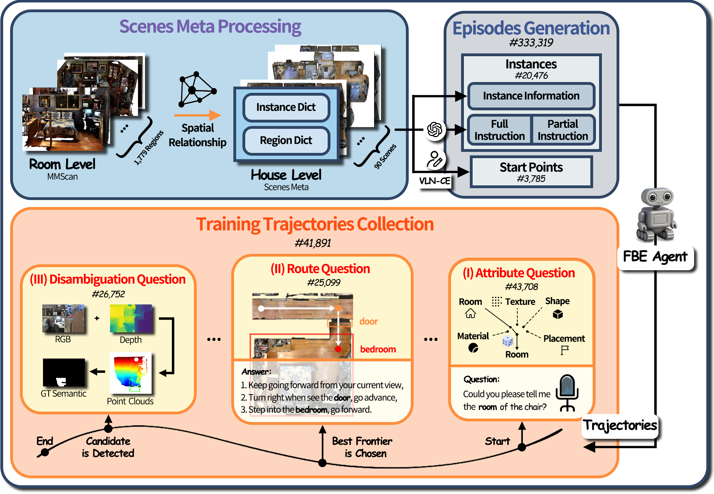
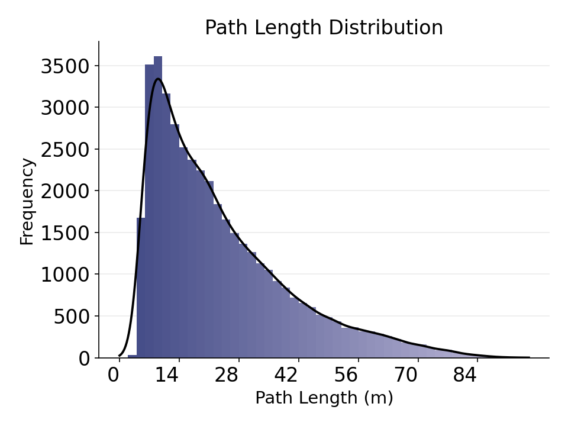
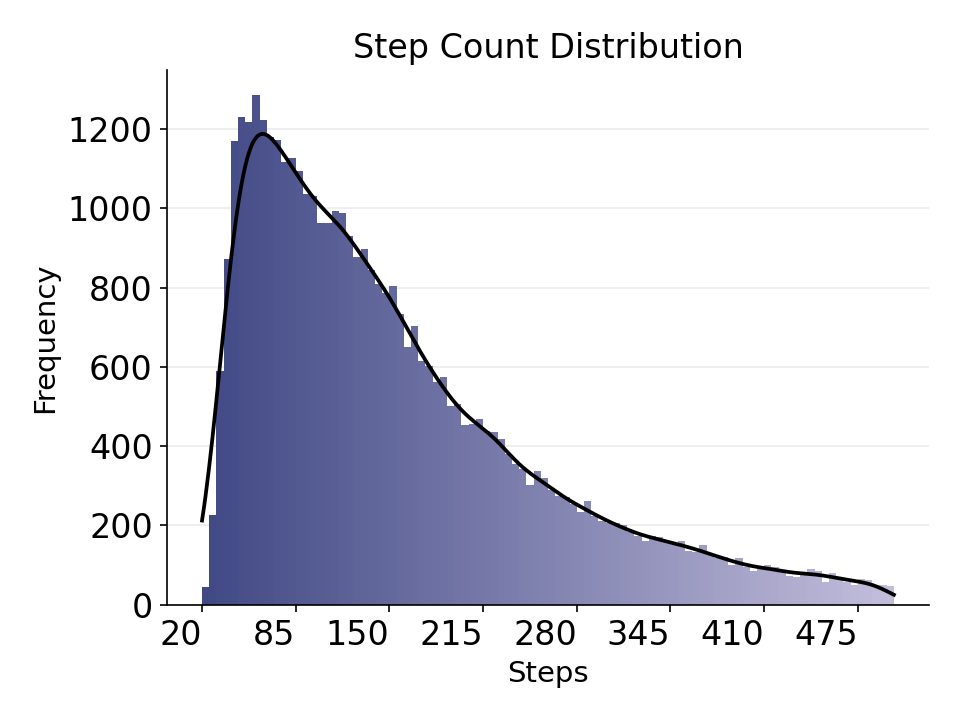
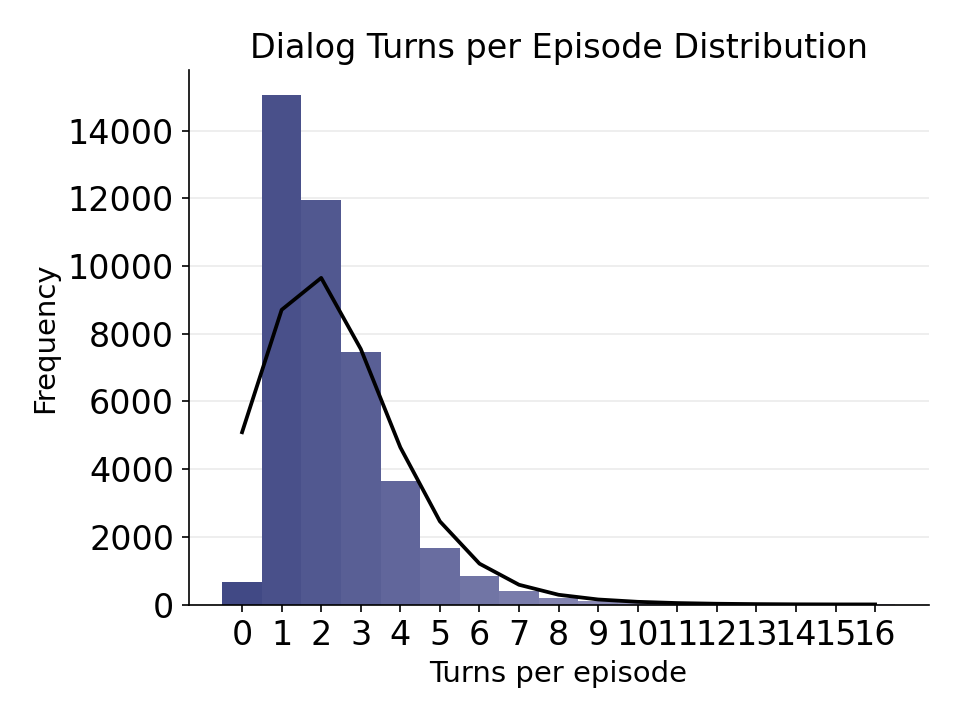
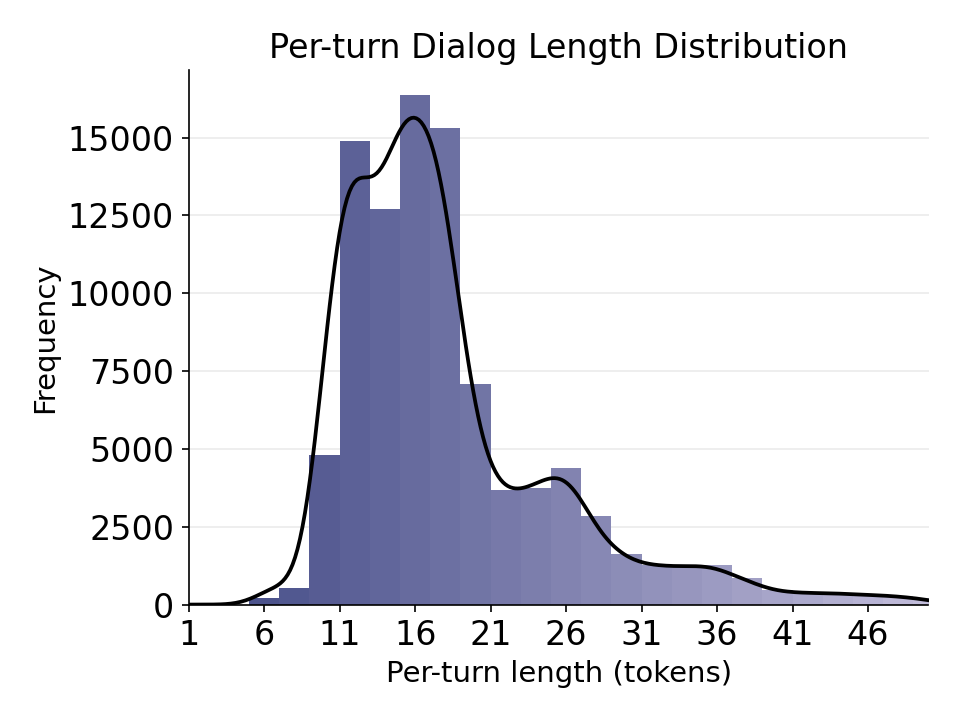
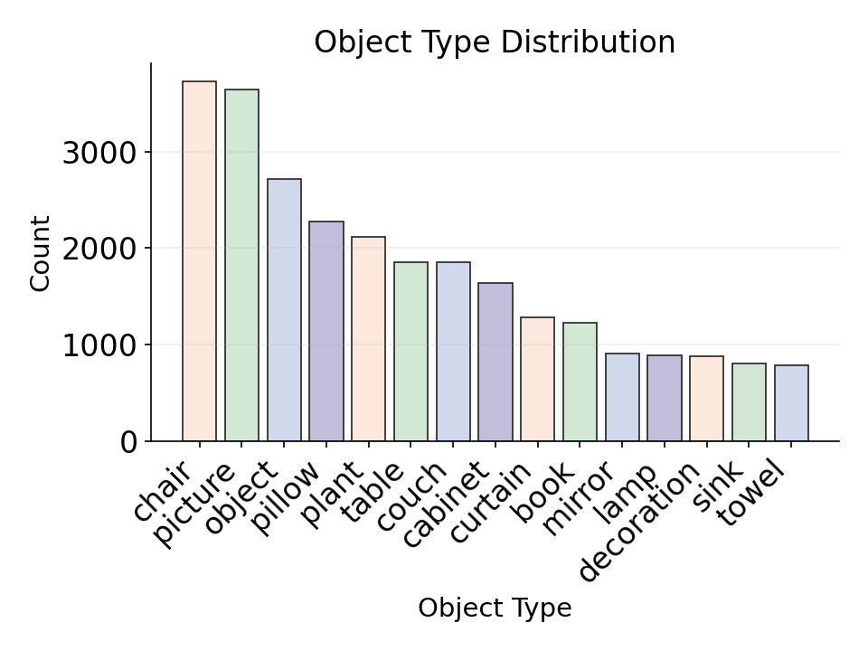
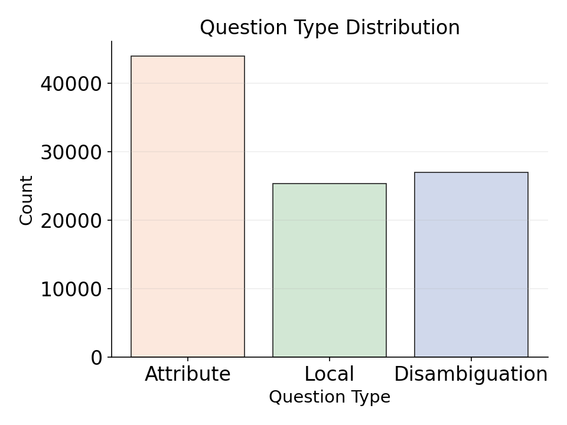

Abstract
In most existing embodied navigation tasks, instructions are well-defined and unambiguous, such as instruction following and object searching. Under this idealized setting, agents are required solely to produce effective navigation outputs conditioned on vision and language inputs. However, real-world navigation instructions are often vague and ambiguous, requiring the agent to resolve uncertainty and infer user intent through active dialog. To address this gap, we propose Interactive Instance Object Navigation (IION), a task that requires agents not only to generate navigation actions but also to produce language outputs via active dialog, thereby aligning more closely with practical settings. IION extends Instance Object Navigation (ION) by allowing agents to freely consult an oracle in natural language while navigating. Building on this task, we present the Vision Language-Language Navigation (VL-LN) benchmark, which provides a large-scale, automatically generated dataset and a comprehensive evaluation protocol for training and assessing dialog-enabled navigation models. VL-LN comprises over 41k long-horizon dialog-augmented trajectories for training and an automatic evaluation protocol with an oracle capable of responding to agent queries. Using this benchmark, we train a navigation model equipped with dialog capabilities and show that it achieves significant improvements over the baselines. Extensive experiments and analyses further demonstrate the effectiveness and reliability of VL-LN for advancing research on dialog-enabled embodied navigation.
Task Introduction

VL-LN Benchmark
Data Generation

To collect data for policy training, we use a three-step data generation pipeline: (i) aggregate hierarchical room-level labels into house-level meta-annotations; (ii) pair each target instance with a start point to form episodes; and (iii) run a frontier-based exploration (FBE) agent to explore unknown scenes and, via rule-based prompts, generate Q&A to produce dialog-augmented trajectories.
Below we show summary statistics for the collected trajectories—path length, step count, number of dialog turns, per-turn dialog length, and the distributions of object types and question types.






Policy Training
We employ Qwen2.5-VL-7B-Instruct as our baseline model and train it following the InternVLA-N1 procedure, but with a different data mixture comprising visual-language navigation, goal-oriented navigation, and IION data.
Evaluation
🤖 Search for the couch.
🤖 Search for the oven.
🤖 Search for the plant.
🤖 Search for the fireplace.
BibTeX
Copy & cite the paper.
@article{VLLNBench2024,
title = {VL-LN Bench: Towards Long-horizon Goal-oriented Navigation with Active Dialogs},
author = {Huang, Wensi and Zhu, Shaohao and Wei, Meng and Xu, Jinming and Liu, Xihui and Wang, Hanqing and Wang, Tai and Zhao, Feng and Pang, Jiangmiao},
journal = {CONFERENCE/ARXIV},
year = {2024},
url = {https://YOUR_DOMAIN.com/YOUR_PROJECT_PAGE}
}